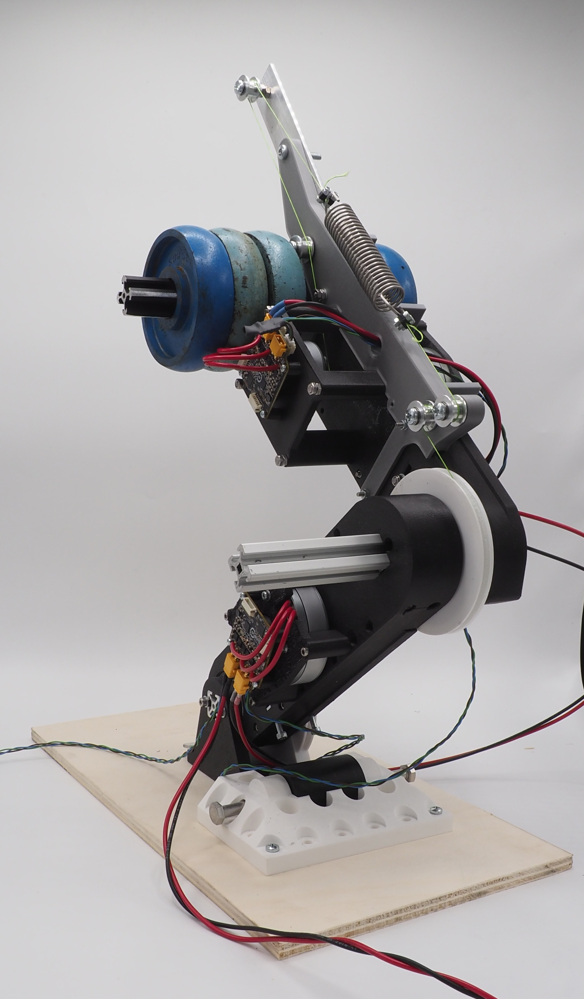

Co-design actuation topology optimisation
The challenge we currently face in actuation design of robots is that we want high power, high torque ánd high efficiency while staying light and compact.
This is a hard challenge, but luckily, we can copy nature. As our muscles have found solutions to the exact same problems!
Animals use elasticity and bi-articulation (i.e. muscles spanning over multiple joints) in their bodies to improve efficiency and power/force production.
But, currently most of the robots still use a stiff mono-articulated actuation topology. Why is that?
Designing actuation topologies is complex, as you need to take into account a lot of variables and unknowns,
which makes it a field where you need to gain a lot of experience, and you need to iterate a lot to come up with a good design.
Thus, elasticity and bi-articulation are often disregarded to reduce design complexity.
We have developed a method that optimises the movement of your robot while also optimising certain variables of the actuation topology,
which is called co-design. We have applied it on a robotic leg to optimise for squatting, and we even developed a prototype to validate our co-design results!
The thesis can be found here: https://purl.utwente.nl/essays/109977
Co-design method
Our co-design method is a trajectory optimisation where continuous design variables of the leg are also optimised. The design variables that are optimised are: Gear ratio of the actuators and stiffness of the elastic elements. The leg is modelled as a planar 3DOF mechanism with revolute joints in the toe, ankle and knee. The hip has a payload of 3kg to simulate the weight of a complete robot on that leg.The two actuation topologies we have chosen are: a conventional mono-articulated actuation topology with 2 stiff actuators (QDDs) and a bi-articular actuation topology with 2 QDDs and 1 bi-articular SEA.

Optimised trajectory & design parameters
We have chosen a squat as task to optimise for. The resulting squat for both actuation topologies can be seen in the figure to the left.

Prototype
I wanted a thesis containing a few things: use nature inspired design, an optimisation problem (as I am fascinated by solving complex problems with optimisation) and to top things off I wanted to build a prototype.So I was allowed to build a prototype to validate the co-design results, while doing the co-design alone would also have been sufficient for a thesis.

Cross section link
The link mechanism is an adaptation on the design of the open dynamic robot initiative: https://open-dynamic-robot-initiative.github.io/

Next steps
We suspect that the drivetrain friction can be estimated more accurately, to improve the predicted current draw (thus energy lost through Joule heating). We plan to publish this research as it is the first co-design research that compares simulated co-design results with measurements on a prototype. Interesting additions would be: optimising for multiple movements to get an optimised system for general use, add an outer loop (such as a Genetic Algorithm) to optimise discrete design variables such as actuation topologies or component selection.